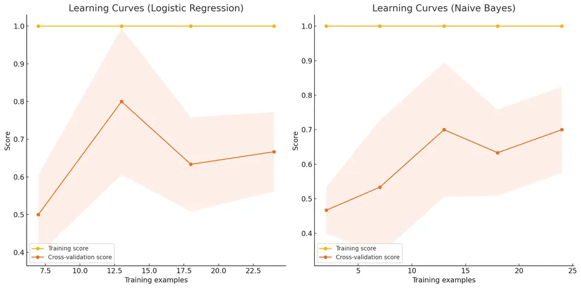
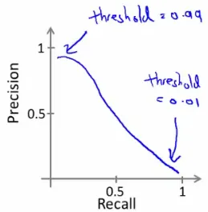

Machine Learning System Design: Building a Spam Classifier
These notes outline the key strategies and considerations for developing a spam classification system. This process involves several steps, from feature selection to error analysis, and addresses the challenges of working with skewed datasets.
Prioritizing Work in Spam Classification
When building a spam classifier, a critical step is to select and utilize features effectively. Let's break down the process and include an example of how inputs might look.
Feature Selection
The first step involves choosing words that are strongly indicative of whether an email is spam. This is based on the assumption that certain words appear more frequently in spam emails than in non-spam emails.
- Spam Indicators: Words like "buy", "discount", and "deal" are often used in promotional or spam emails.
- Non-Spam Indicators: Words like "Andrew" (a common name) or "now" might be more frequent in regular, non-spam emails.
In this mock example, we'll use simple training-corpus word-frequency analysis to illustrate the process.
import numpy as np
from sklearn.feature_extraction.text import CountVectorizer
emails = ['Buy cheap products now',
'Limited time discount deal',
'Meeting scheduled with Andrew',
'Discount on your next purchase',
'Andrew, can we meet now?',
'Exclusive deal just for you']
labels = [1, 1, 0, 1, 0, 1]
training_emails, training_labels = emails, np.asarray(labels)
count_vectorizer = CountVectorizer()
training_counts = count_vectorizer.fit_transform(training_emails).toarray()
words = count_vectorizer.get_feature_names_out()
for label in [0, 1]:
totals = training_counts[training_labels == label].sum(axis=0)
print("class", label, dict(zip(words, totals)))You can run this code in a Python environment to see the output, and the data will be displayed for you to understand which words are more indicative of spam or non-spam emails.
Vector Representation of Emails
Each email is represented as a vector, where each element corresponds to one of the selected features (words).
- Binary Encoding: For each word in our feature set, if the word is present in the email, that feature is marked with a 1; if it's absent, it's marked with a 0.
Below is an implementation of representing emails as binary vectors based on the selected features (words). We'll use the same sample data and feature selection process as before, and then create binary vectors for the emails.
import numpy as np
# Continue with the training corpus and count matrix defined above.
training_binary = (training_counts > 0).astype(int)
for label in [0, 1]:
members = training_binary[training_labels == label]
frequency = members.mean(axis=0)
print("class", label, "fraction of documents containing each word:")
print(dict(zip(words, frequency)))
assert set(np.unique(training_binary)) <= {0, 1}This code will create and display the binary vectors representing the presence or absence of selected features (words) in each email, along with their labels.
Example of Input Representation
Consider an example where our feature set consists of words: ["buy", "discount", "deal", "Andrew", "now"]. An email's content will be transformed into a vector based on the presence or absence of these words.
| Email Content | buy | discount | deal | Andrew | now |
|---|---|---|---|---|---|
| "Buy now at a great discount" | 1 | 1 | 0 | 0 | 1 |
| "Meeting Andrew now" | 0 | 0 | 0 | 1 | 1 |
| "Deal of the century" | 0 | 0 | 1 | 0 | 0 |
Below is the Python implementation that transforms email content into vectors based on the presence or absence of specific words in a given feature set.
import numpy as np
from sklearn.feature_extraction.text import CountVectorizer
example_emails = ["Buy now at a great discount", "Meeting Andrew now",
"Deal of the century"]
features = ["buy", "discount", "deal", "andrew", "now"]
vectorizer = CountVectorizer(binary=True, vocabulary=features)
vectors = vectorizer.fit_transform(example_emails).toarray()
np.testing.assert_array_equal(vectors, [[1,1,0,0,1],[0,0,0,1,1],[0,0,1,0,0]])
print(vectors)This code will create and display the binary vectors for each email based on the selected feature set.
Word Occurrences Analysis
The next step involves analyzing the frequency of each category of words (spam or non-spam) in your training dataset. This analysis can reveal:
- Commonalities in Spam: If certain words are predominantly present in spam emails.
- Differentiators for Non-Spam: Words that are usually absent in spam but present in non-spam emails.
Below is the Python implementation to analyze the frequency of each category of words (spam or non-spam) in the training dataset. This analysis will reveal commonalities in spam emails and differentiators for non-spam emails.
import numpy as np
# Compare rates rather than raw totals when class sizes differ.
for label in [0, 1]:
members = training_binary[training_labels == label]
smoothed_probability = (members.sum(axis=0) + 1)/(len(members) + 2)
print("class", label, "Laplace-smoothed word-presence probabilities:")
print(dict(zip(words, smoothed_probability)))This code will create and display the table showing the frequency of words in both spam and non-spam emails, and it will specifically highlight the commonalities in spam and differentiators for non-spam emails.
Model Selection
Based on this vector representation, a classification model like logistic regression or a naive Bayes classifier can be employed. The choice of model might depend on:
- Dataset Size: Larger datasets might benefit from more complex models.
- Feature Interpretability: If understanding why an email is classified as spam is important, a model that offers interpretability (like decision trees) might be preferable.
- Performance Metrics: Based on the desired balance between precision and recall (as spam classification often deals with imbalanced datasets).
Below is a Python implementation to illustrate how to use a logistic regression model and a naive Bayes classifier for spam classification based on the binary vector representation of emails. It includes considerations for dataset size, feature interpretability, and performance metrics.
from sklearn.feature_extraction.text import CountVectorizer
from sklearn.linear_model import LogisticRegression
from sklearn.metrics import classification_report
from sklearn.model_selection import train_test_split
from sklearn.naive_bayes import BernoulliNB
from sklearn.pipeline import make_pipeline
emails = ['Buy cheap products now',
'Limited time discount deal',
'Meeting scheduled with Andrew',
'Discount on your next purchase',
'Andrew, can we meet now?',
'Exclusive deal just for you']
labels = [1, 1, 0, 1, 0, 1]
train_text, test_text, y_train, y_test = train_test_split(
emails, labels, test_size=.33, stratify=labels, random_state=42)
for estimator in [LogisticRegression(max_iter=1000), BernoulliNB(alpha=1.)]:
model = make_pipeline(CountVectorizer(binary=True), estimator)
model.fit(train_text, y_train)
print(type(estimator).__name__)
print(classification_report(y_test, model.predict(test_text), labels=[0, 1],
target_names=["Non-spam", "Spam"], zero_division=0))This implementation provides a basic comparison of two common classification models for spam detection and highlights how to evaluate their performance based on different metrics.
Why This Approach?
This method of feature selection and vector representation is effective for several reasons:
- Simplicity: It’s straightforward to implement and understand.
- Scalability: Can easily handle large volumes of data typical for email.
- Adaptability: The model can be updated as new spam trends emerge by adjusting the feature set.
Improving System Accuracy
- Collect More Data: More data can help the system better learn the distinction between spam and non-spam.
- Develop Sophisticated Features: Include features based on email routing data or develop algorithms to detect common misspellings in spam.
- Learning Curves: Plot learning curves to assess whether additional data or features will benefit the system.
Below is the Python implementation to plot learning curves for both logistic regression and naive Bayes classifiers. Learning curves can help assess whether additional data or features will benefit the system.
import numpy as np
import matplotlib.pyplot as plt
from sklearn.feature_extraction.text import CountVectorizer
from sklearn.linear_model import LogisticRegression
from sklearn.model_selection import learning_curve, StratifiedKFold
from sklearn.naive_bayes import BernoulliNB
from sklearn.pipeline import make_pipeline
emails = ['Buy cheap products now',
'Limited time discount deal',
'Meeting scheduled with Andrew',
'Discount on your next purchase',
'Andrew, can we meet now?',
'Exclusive deal just for you',
'Hello friend, how are you?',
'Free coupon available now',
'Your order has been shipped',
'Join us for a webinar on marketing',
'Andrew, please review the attached document',
'Get a free trial of our software',
'Your invoice is attached',
'Limited time offer, buy now',
'Meeting reminder: Today at 3 PM',
"Congratulations! You've won a prize",
'Your subscription is expiring',
'Schedule a meeting with the team',
"Don't miss out on this opportunity",
'Project update: status report',
'Special discount just for you',
'Join our network of professionals',
'Reminder: your appointment tomorrow',
'Win a free vacation trip',
'Your account has been updated',
'New features added to your account',
'Sign up for our newsletter',
'Your delivery is on its way',
'Invitation to connect on LinkedIn',
'Get a bonus with your next purchase']
labels = [1,
1,
0,
1,
0,
1,
0,
1,
0,
0,
0,
1,
0,
1,
0,
1,
1,
0,
1,
0,
1,
0,
0,
1,
0,
0,
1,
0,
0,
1]
splitter = StratifiedKFold(n_splits=3, shuffle=True, random_state=0)
for estimator in [LogisticRegression(max_iter=1000), BernoulliNB(alpha=1.)]:
model = make_pipeline(CountVectorizer(binary=True), estimator)
sizes, training, validation = learning_curve(
model, emails, labels, cv=splitter, train_sizes=[.5, .75, 1.],
scoring="accuracy", shuffle=True, random_state=0, error_score="raise")
assert np.isfinite(training).all() and np.isfinite(validation).all()
print(type(estimator).__name__, sizes, training.mean(axis=1),
validation.mean(axis=1))
plt.plot(sizes, validation.mean(axis=1), marker="o",
label=type(estimator).__name__)
plt.xlabel("Training messages per fit")
plt.ylabel("Mean held-out accuracy")
plt.legend()
plt.show()
The retained figure illustrates the idea of a training/validation gap. The runnable comparison now fits the vocabulary separately inside each training fold and prints its scores under an explicit three-fold protocol. A small mean gap does not establish that one algorithm is generally preferable.
Validation curves can suggest whether more representative messages or a changed representation is useful. Their variability, class composition, and splitting unit matter. Messages from the same thread or template can make a random row split easier than deployment to a new sender or time period.
Error Analysis
- Manual Review of Errors: Examine instances where the algorithm erred, particularly on the cross-validation set, to understand the nature of these errors.
- Feature Analysis: Determine what additional features could have helped correctly classify the challenging cases.
Below is a mock implementation:
import numpy as np
from sklearn.feature_extraction.text import CountVectorizer
from sklearn.linear_model import LogisticRegression
from sklearn.metrics import confusion_matrix, classification_report
from sklearn.model_selection import train_test_split
from sklearn.naive_bayes import BernoulliNB
from sklearn.pipeline import make_pipeline
emails = ['Buy cheap products now',
'Limited time discount deal',
'Meeting scheduled with Andrew',
'Discount on your next purchase',
'Andrew, can we meet now?',
'Exclusive deal just for you',
'Hello friend, how are you?',
'Free coupon available now',
'Your order has been shipped',
'Join us for a webinar on marketing',
'Andrew, please review the attached document',
'Get a free trial of our software',
'Your invoice is attached',
'Limited time offer, buy now',
'Meeting reminder: Today at 3 PM',
"Congratulations! You've won a prize",
'Your subscription is expiring',
'Schedule a meeting with the team',
"Don't miss out on this opportunity",
'Project update: status report',
'Special discount just for you',
'Join our network of professionals',
'Reminder: your appointment tomorrow',
'Win a free vacation trip',
'Your account has been updated',
'New features added to your account',
'Sign up for our newsletter',
'Your delivery is on its way',
'Invitation to connect on LinkedIn',
'Get a bonus with your next purchase']
labels = [1,
1,
0,
1,
0,
1,
0,
1,
0,
0,
0,
1,
0,
1,
0,
1,
1,
0,
1,
0,
1,
0,
0,
1,
0,
0,
1,
0,
0,
1]
train_text, test_text, y_train, y_test = train_test_split(
emails, labels, test_size=.33, stratify=labels, random_state=42)
review = {}
for label, estimator in [("Logistic regression", LogisticRegression(max_iter=1000)),
("Bernoulli naive Bayes", BernoulliNB(alpha=1.))]:
model = make_pipeline(CountVectorizer(binary=True), estimator)
model.fit(train_text, y_train)
predicted = model.predict(test_text)
matrix = confusion_matrix(y_test, predicted, labels=[0, 1])
errors = [(text, int(true), int(pred)) for text, true, pred in
zip(test_text, y_test, predicted) if true != pred]
assert len(errors) == np.count_nonzero(np.asarray(y_test) != predicted)
review[label] = (matrix, errors)
print(label, "\n", matrix)
print(classification_report(y_test, predicted, labels=[0, 1],
target_names=["Non-spam", "Spam"], zero_division=0))
for item in errors:
print(item)Running the seeded review code produces these counts. Rows of each confusion matrix are actual classes, and columns are predicted classes, in the order non-spam then spam.
| Model | TN | FP | FN | TP |
|---|---|---|---|---|
| Logistic regression | 5 | 0 | 2 | 3 |
| Bernoulli naive Bayes | 5 | 0 | 2 | 3 |
The actual held-out messages with prediction errors are:
| Model | Held-out message | Actual | Predicted |
|---|---|---|---|
| Logistic regression | Sign up for our newsletter | 1 | 0 |
| Logistic regression | Congratulations! You've won a prize | 1 | 0 |
| Bernoulli naive Bayes | Sign up for our newsletter | 1 | 0 |
| Bernoulli naive Bayes | Congratulations! You've won a prize | 1 | 0 |
Each message is zipped with its own held-out target and prediction. Zipping predictions against the original unsplit corpus would attach them to the wrong messages. The assertion checks that the review list contains exactly the number of prediction errors.
This thirty-message corpus illustrates the process, not a stable estimate of operational spam detection. Reviewing these errors informs development choices. A final test corpus would need to remain outside that review and subsequent tuning.
Error Metrics for Skewed Classes
In cases where one class (e.g., non-spam) significantly outnumbers the other (e.g., spam), standard error metrics can be misleading.
Cancer Classification Example
- Error Rate Deception: An error rate of 1% might seem low, but if only 0.5% of the samples are cancer-positive, this error rate is not as impressive.
- Importance of Precision and Recall: In skewed datasets, precision and recall become critical metrics for assessing performance.
F-Score Computation
The F-Score is a way to combine precision and recall into a single metric, often used to choose the threshold that maximizes this score in cross-validation.
Understanding Precision and Recall
Precision and recall are two critical metrics in classification tasks, especially when dealing with imbalanced datasets.
Definition of Terms
- True Positive (TP): Correctly identified positive.
- False Positive (FP): Incorrectly identified positive.
- True Negative (TN): Correctly identified negative.
- False Negative (FN): Incorrectly identified negative.
Precision
Precision measures the accuracy of the positive predictions. It is defined as:
$$\text{Precision} = \frac{\text{True Positives}}{\text{True Positives} + \text{False Positives}}$$
Recall
Recall measures how well the model identifies actual positives. It is defined as:
$$\text{Recall} = \frac{\text{True Positives}}{\text{True Positives} + \text{False Negatives}}$$
Trading off Precision and Recall
In many applications, there is a trade-off between precision and recall. Adjusting the threshold in a classifier can shift the balance between these two metrics.
Logistic Regression Classifier Example
- Standard Threshold ($h_{\theta}(x) \geq 0.5$): The default threshold for binary classification.
- Modified Threshold ($h_{\theta}(x)\geq0.8$): Produces fewer positive predictions and cannot increase recall for fixed scores. Empirical precision can move in either direction, depending on which messages are removed.

Calculating the F-Score
For nonnegative confusion counts,
$$ F_1=\frac{2\,\mathrm{TP}}{2\,\mathrm{TP}+\mathrm{FP}+\mathrm{FN}}. $$
This equals the harmonic mean of precision and recall when the terms are defined. An explicit zero-denominator policy is needed for empty positive predictions or a split without positives. Thresholds are selected on development scores and then fixed for final assessment.
Calculate a Text Model before Treating It as a Black Box
Let the training messages be "buy deal", "buy", "meeting", and "meeting deal", with spam labels $1,1,0,0$. For the fixed vocabulary buy, deal, meeting, their binary rows are $(1,1,0),(1,0,0),(0,0,1),(0,1,1)$.
There are two documents per class. Adding one occurrence and one absence as Laplace smoothing gives the spam word probabilities $(3/4,1/2,1/4)$ and the non-spam probabilities $(1/4,1/2,3/4)$. Each class prior is one half.
For "buy deal", Bernoulli naive Bayes includes the absent meeting feature. Its spam joint probability is $(1/2)(3/4)(1/2)(3/4)=0.140625$. The non-spam joint probability is $(1/2)(1/4)(1/2)(1/4)=0.015625$. Normalizing gives spam probability 0.9.
Conditional independence makes this calculation simple; it is a modeling assumption, not a fact established by counting words. Correlated phrases can cause evidence to be counted more than once. Multinomial naive Bayes instead models word counts and has a different likelihood, particularly for absent words and document length.
Verify Probabilities and Threshold Metrics
import numpy as np
from scipy.special import logsumexp
from sklearn.feature_extraction.text import CountVectorizer
from sklearn.naive_bayes import BernoulliNB
from sklearn.metrics import confusion_matrix, f1_score, precision_score, recall_score
from sklearn.pipeline import make_pipeline
texts = ['buy deal', 'buy', 'meeting', 'meeting deal']
y = np.array([1, 1, 0, 0])
vocabulary = ['buy', 'deal', 'meeting']
vectorizer = CountVectorizer(binary=True, vocabulary=vocabulary)
X = vectorizer.fit_transform(texts).toarray()
np.testing.assert_array_equal(X, [[1, 1, 0], [1, 0, 0], [0, 0, 1], [0, 1, 1]])
word_probability = np.array([[(X[y == c, j].sum() + 1) / (sum(y == c) + 2) for j in range(X.shape[1])] for c in [0, 1]])
new = vectorizer.transform(['buy deal']).toarray()[0]
log_joint = np.log(0.5) + (new * np.log(word_probability) + (1 - new) * np.log1p(-word_probability)).sum(axis=1)
manual = np.exp(log_joint - logsumexp(log_joint))
model = BernoulliNB(alpha=1.0).fit(X, y)
np.testing.assert_allclose(manual, [0.1, 0.9])
np.testing.assert_allclose(model.predict_proba(new[None, :])[0], manual)
pipeline = make_pipeline(CountVectorizer(binary=True), BernoulliNB(alpha=1.0))
pipeline.fit(texts, y)
assert 'jackpot' not in pipeline.named_steps['countvectorizer'].vocabulary_
assert pipeline.predict_proba(['jackpot']).shape == (1, 2)
truth = np.array([0, 1, 1, 0, 1, 0, 1, 0, 1, 1])
scores = np.array([0.1, 0.4, 0.35, 0.8, 0.45, 0.05, 0.6, 0.9, 0.75, 0.85])
print('new-message class probabilities:', manual)
for threshold in [0.35, 0.5, 0.8]:
predicted = scores >= threshold
tn, fp, fn, tp = confusion_matrix(truth, predicted, labels=[0, 1]).ravel()
precision = tp / (tp + fp) if tp + fp else 0.0
recall = tp / (tp + fn) if tp + fn else 0.0
f1 = 2 * tp / (2 * tp + fp + fn) if 2 * tp + fp + fn else 0.0
np.testing.assert_allclose([precision, recall, f1], [precision_score(truth, predicted, zero_division=0), recall_score(truth, predicted, zero_division=0), f1_score(truth, predicted, zero_division=0)])
print('threshold/counts/P/R/F1:', threshold, tuple(map(int, (tn, fp, fn, tp))), np.round([precision, recall, f1], 6))
candidates = np.unique(scores)
selected = max(candidates, key=lambda t: f1_score(truth, scores >= t))
np.testing.assert_allclose(selected, 0.35)
np.testing.assert_allclose(f1_score(truth, scores >= selected), 6 / 7)The first assertion verifies the text representation. A direct log-probability calculation matches scikit-learn's BernoulliNB posterior. The learned-vocabulary pipeline then shows where feature fitting belongs: the unseen word jackpot is absent from the training vocabulary. An all-unseen message provides no known-word evidence; its decision follows the fitted model's remaining terms.
For the ten validation scores in the code, the thresholds produce:
| Threshold | TP | FP | FN | Precision | Recall | F1 |
|---|---|---|---|---|---|---|
| 0.35 | 6 | 2 | 0 | 0.7500 | 1.0000 | 0.8571 |
| 0.50 | 3 | 2 | 3 | 0.6000 | 0.5000 | 0.5455 |
| 0.80 | 1 | 2 | 5 | 0.3333 | 0.1667 | 0.2222 |
This constructed score ordering demonstrates why a higher threshold need not improve observed precision. Two negative messages have high scores and remain selected while positives are removed. The best listed F1 is $12/(12+2)=6/7$. Searching distinct observed scores tests all distinct prediction sets under the stated at-least threshold rule; a coarse fixed grid can miss one.
The code selects on validation scores. Its maximizing F1 is a development result, rather than an unbiased estimate for the tuned threshold. Final performance needs separate scores from messages not used for fitting, representation choices, or threshold selection.
Prevalence Changes the Meaning of a Good Error Rate
Suppose 10,000 messages contain 100 spam messages. A detector with 90% recall catches 90 and misses ten. If its false-positive rate is 1%, it also blocks 99 of the 9,900 legitimate messages. Precision is then $90/(90+99)\approx0.4762$. A seemingly small false-positive rate can therefore produce more false alerts than true detections.
An always-non-spam rule has 99% accuracy and zero spam recall on that population. Accuracy alone hides its failure for the positive class. Conversely, F1 ignores true negatives and treats precision and recall symmetrically; it need not represent the cost of blocking an important legitimate message.
With calibrated probability p, false-positive cost nine, and false-negative cost one, expected-cost classification predicts spam when $9(1-p)\leq p$, or $p\geq0.9$. Different costs give a different threshold even with the same ranking model. If class prevalence changes, probabilities and precision can change without a change in the underlying score order.
Evaluate the Entire Text Procedure
Vocabulary fitting, document-frequency filtering, inverse-document-frequency weights, feature selection using labels, and probability calibration all use information from their fitted data. Put these stages inside cross-validation where they are part of the assessed procedure. Splitting after vectorization can expose validation messages through the representation even if the classifier itself is fitted only on training rows.
A fixed, externally chosen vocabulary can be legitimate when it is genuinely available before deployment; the hand example fixes its vocabulary to make arithmetic checkable. A vocabulary selected after reviewing test errors is another adaptive choice. The provenance of a feature matters more than whether its construction uses an explicit target argument.
Split units should reflect how messages arrive. Near-duplicate campaign messages, replies in one thread, or messages from one sender can share information. A chronological or grouped evaluation can address generalization to later messages or new groups, while a random message split assesses a different information setting.
The measured loss should also match the action. Quarantining a message for review has a different cost from deleting it. Review capacity can impose a top-k decision rather than one fixed probability threshold. Report alert volume, precision among reviewed messages, missed positives, and the amount of data supporting those measurements.
Turn Error Review into a Measurable Change
Attach every error to the actual held-out message, its prediction, and a stable identifier. Categorize repeated mechanisms such as ambiguous labels, unseen vocabulary, missing sender context, or a shifted campaign style. An error category should motivate a concrete feature or data intervention that can be evaluated.
Counting observed categories gives a limited bound on potential improvement. If twelve of twenty errors involve attachments but the proposed feature cannot recover every one of them, twelve is an upper bound on errors it might address in that reviewed set. Categories can overlap, and a change can introduce new errors, so their counts cannot simply be added as guaranteed gains.
Keep a development corpus for this iteration and reserve the final evaluation. Once a test error has guided a feature change, it has supplied training information to the development process. Repeating the same test comparison cannot restore independence by changing the model's name.
Implementation checks and performance measurements serve different purposes. The exact naive Bayes calculation checks feature order, smoothing, class mapping, and normalization. The threshold table checks confusion arithmetic and decision conventions. A representative held-out corpus assesses whether that complete procedure is useful for the intended message stream.
Assess Probability Quality Separately from the Threshold
Accuracy and F1 depend on a decision threshold. They do not distinguish two probability forecasts that produce the same labels. For targets $(1,0)$, probabilities $(0.51,0.49)$ and $(0.99,0.01)$ both classify correctly at one half, but their Brier scores are 0.2401 and 0.0001.
For a true conditional positive probability q, expected squared probability error is
$$ q(1-p)^2+(1-q)p^2=(p-q)^2+q(1-q). $$
It is minimized at $p=q$. At $q=0.6$, reporting $p=0.9$ has expected Brier loss 0.33, compared with 0.24 for the correct probability. The excess 0.09 is the squared probability error.
Log loss also evaluates probabilities and strongly penalizes confidence in an incorrect label. The two correct forecasts above have mean log losses approximately 0.673345 and 0.010050. These two observations illustrate metric arithmetic; estimating calibration requires enough held-out predictions over a useful range of probabilities.
Calibration compares predicted probabilities with observed class frequencies. Fit any learned calibration map using appropriate held-out or out-of-fold predictions. Assessing calibration only on the data that fitted that map gives an adaptive assessment, just as tuning a threshold does.
Prevalence also enters Bayes' rule. In the four-message example, the feature likelihood ratio for "buy deal" is nine. With prior spam probability one half, posterior odds are nine and posterior probability is 0.9. If that likelihood ratio stays fixed while the prior probability becomes 0.1, posterior odds become $9(0.1/0.9)=1$, giving probability 0.5.
That adjustment assumes stable class-conditional feature distributions. A new campaign can change the language within spam itself, violating that assumption. Monitoring vocabulary coverage, score distributions, labeled error rates, and delayed outcomes helps distinguish a prior shift from a changed conditional model.
Reference
These notes are based on the free video lectures offered by Stanford University, led by Professor Andrew Ng. These lectures are part of the renowned Machine Learning course available on Coursera. For more information and to access the full course, visit the Coursera course page.